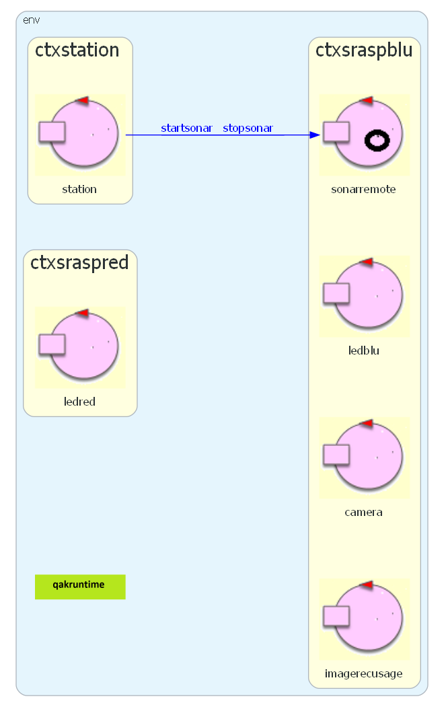
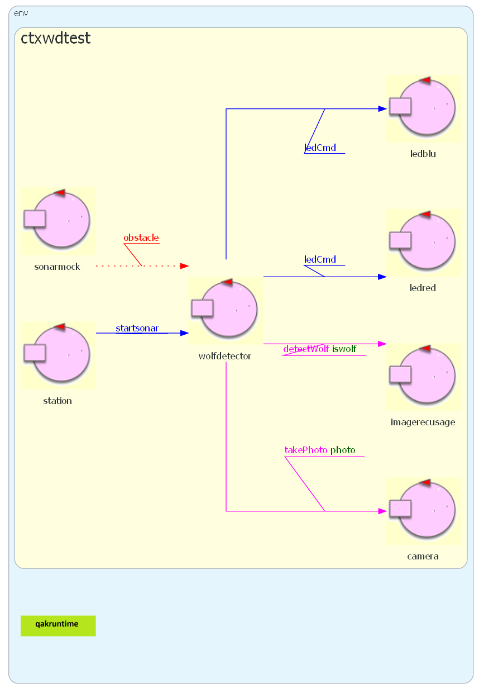

SitemaRilevamento¶
SitemaRilevamento: Introduzione¶
Si vuole esplorare come sia possibile costruire modelli eseguibili di un sistema software partendo dalla analisi del problema, senza entrare subito nai dettagli tecnologici necessari per la costruzione effettiva del software.
Il caso di studio è una applicazione IOT denominata WD (WolfDetection).
WD-Requirements¶
Una stazione sperimentale per lo studio di lupi allo stato libero, ha disolocato in una zona di interesse un RaspberryPi dotato di una fotocamera, di un sonar HC-SR04 e di un Led (di colore blu).
Nella stazione è disponibile un altro RaspberryPi, dotato di un Led di colore rosso.
Si chiede di costruire un sistema software che:
permetta l’accensione e lo spegnimento remoto del sonar mediante comandi impartiti dalla stazione
accenda il Led blu quando il sonar rileva un ostacolo a distanza inferiore a un limite prefissato DMIN
scatti una fotografia dell’ostacolo rilevato a distanza inferiore a DMIN e la invii ad un elaboratore di immagini in grado di capire se l’ostacolo è un lupo
accenda il Led rosso presso la stazione, se è stato rilevato un lupo
spenga il Led blu e il Led rosso quando il sonar non rileva più ostacoli a distanza inferiore a DMIN
WD-Requirement analysis¶
The model wdreq.qak shows (formally) the requirements of the WD system, by using the names of the entities of the original text.  |
The The There is no requirement about the interacion amnong the entities, besides the commands to the sonar. The entities |
{kind=link}
WD-Problema analysis¶
Let us
The
sonarremoteentity is able to react to commands from thestationand is responsible for the detection of obstacles. Thus, it is NOT REDUCIBLE to the physical sonar HC-SR04.Should the
ledbluentity have other responsibilities besides the simple turning on and off of the blue led?. Our answer is NO, for the Single responsibility principle.The same applies to the
ledrossoentity.
.
The physical sonar can be viewed as a source of data, described in demostreams.qak. Now, the problem is:
.
The current (filtered) value of the distance measured by the HC-SR04 |
Event sonarData : sonarData( D )
|
The logic information required by the application? |
Event obstacle : obstacle( D )
|
In any case, we model the information generated by the sonar as an event since the sonar, as a device, does not have knowledge about its users.
In order to keep the application logic simpler, .
.
, that is not part of the WD system: in this case, the image taken by the
camerashould be sent to the server by theimagerecusagelocated on thectxraspblue.: in this case, the image taken by the camera should be sent to some entity of the
ctxstationby theimagerecusagelocated on thectxraspblue.: in this case, the image taken by the
camerashould be sent to theimagerecognizerlocal to thectxraspblue.
We ask to the customer to clarify this point. The answer is: 1.
.
The main candidate is the sonarremote, that could work as the of the application activities.
It could better renamed as .
As an alternative, we could select the station, but this would imply higher network traffic.
WS-Logical architecture¶
Il modello: wdreqtest.qak |
 |
{kind=link}